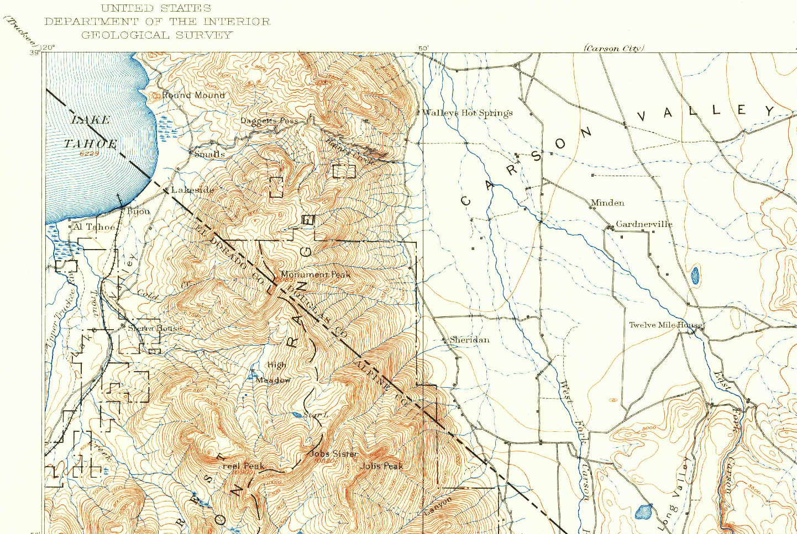
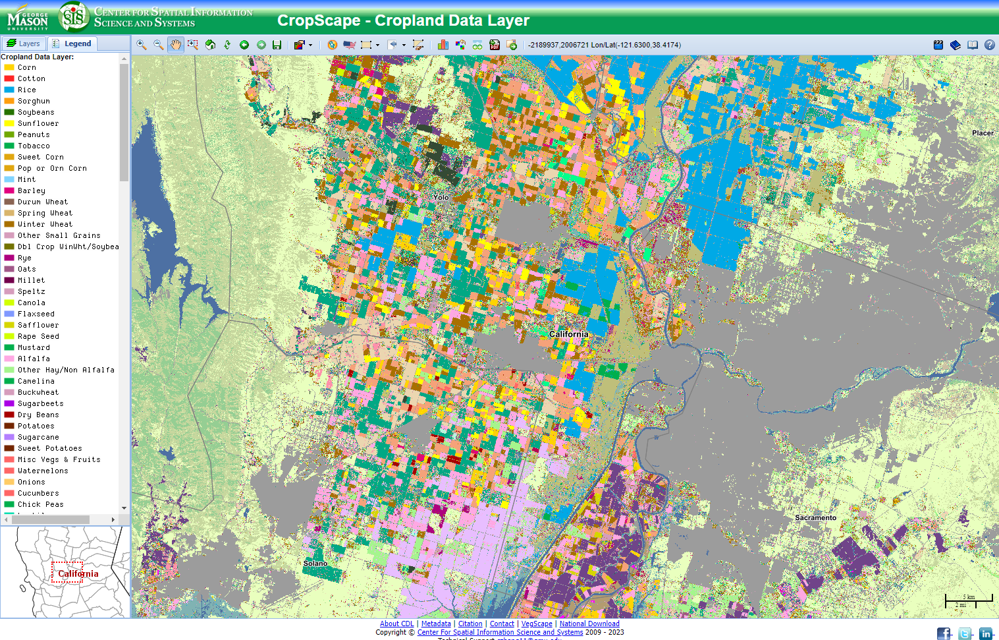

4 Cross-Over Data
Until now, we’ve considered our data models in a fairly narrow context - vector data is for discrete objects and raster data is for continuous measurements. But, there are times these rules don’t fit our data or use case. Let’s look at some cross-over data examples.

Above: A grid comparing discrete vs. continuous data and raster vs. vector data representations of these two situations.
4.1 Vectors Representing Gradients
Sometimes it is easier to understand or work with continuous data if we group it into similar values. (People sometimes this process names like discretizing, binning, or chunking.) In a non-spatial context, we make histograms by counting the number of values that fall into “bins” of data to understand data distributions. When we use vector data to represent continuous data, we typically use lines to represent the boundaries between ranges of data values.
Common examples include topographic lines, isotherms (lines of equal temperature), or isochrones (lines of equal travel time).
4.1.1 Examples
4.1.1.1 Topographic Lines
Topographic (“topo” for short) lines show lines of equal elevation. Representing elevation in this way is efficient and, while not immediately intuitive to understand, a person can learn to interpret these kinds of maps with a little training.

Above: A clip of the northwest corner of the 1889 USGS Markleeville, CA topo map (1:125000 scale)
In this map, you can immediately see which parts of the landscape are steep and mountainous where the lines are close together because the elevation changes quickly (the west side of the map) and which parts are essentially flat (the east side) where the lines are far apart. Elevation values are communicated with labels and a key to tell you the increment for non-labeled lines (or you can count the unlabeled lines between the labeled ones and do a little math).
Explore more topo maps at the USGS TopoView website. USGS has scanned most (if not all) of the topo maps made by the USGS and the site includes spatial data downloads for maps ranging from the 1800s to the present.
4.2 Raster Representing Discrete Objects
Sometimes it makes more sense to represent discrete objects in a raster. Masking raster layers to indicate areas to include and exclude from an analysis are common, as are crop type maps. Rasters can sometime store large datasets like crop cover more efficiently. Rasters may also be needed for specific types of analysis.
Scanned maps that represent features with points, lines, and polygons (like the USGS topo maps we looked above) are also technically raster data.
4.2.1 Example
4.2.1.1 CropScape
It’s fairly common to represent landcover with raster data. One reason for this is that the file size is smaller when you use raster data than vector data, given the complex nature of the boundaries between crop types. Another reason is that many land cover analyses use mostly raster datasets as inputs, so having this data produced and available as a raster dataset works well with the other data you might use for this kind of work.
The USDA National Agricultural Statistical Service (NASS) produces a raster dataset of crop cover for the US called CropScape. George Mason University’s Center for Spatial Informationa Science and Systems displays this data on an interactive webmap that makes it easy to explore the dataset.

Above: CropScape represents crop cover as raster data
Zoomed out, it might looks like this data is vector data because individual fields tend to have one crop type so it looks like the fields are polygons. But zoom in, especially to an edge area, and you’ll see the pixels.